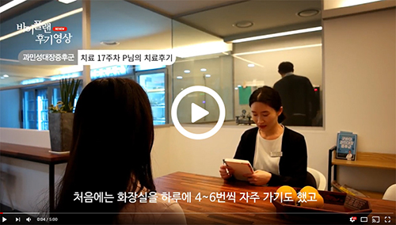

비타민
비타민바이플랜의 통합의학
병원에서 찾지 못하는 원인을 찾아냅니다.단순 증상 완화로만 끝나지 않으며 우리 몸의 자연 치유 능력을 회복시켜 병을 치료합니다.통합의학은 영양학, 기능의학, 보완대체의학, 한의학 가운데
과학적으로 효과와 안전성이 입증된 것을 폭넓게 사용하는 의학을 말합니다.사람, 삶, 정신을 모두 건강하게 만들어 본질적으로 질환을 치료하는 새로운 진료 패러다임입니다
수험생의 위염, 소화불량, 장명, 복통, 가스, 변비, 설사
오랜시간 가만히 앉아있다보면 멀쩡하던 속도 나빠질 수 밖에 없습니다. 시험 압박에 스트레스도 많이 받고 식사 관리도 마음먹은대로 하기 힘든 상황이어서 위장 관리는 더욱 힘든 상황이죠. 시험 일정에 따라 위·장 상황이 변할 수 밖에 없는, 그 날에 맞춘 최적의 집중력과 컨디션이 필요한 수험생의 치료는 달라야합니다. 바이플랜의 시험 일정과 컨디션 조절을 염두해 둔 치료 플랜이 필요한 순간입니다.
SBS, MBC, 매일경제TV 등
다양한 매체에서 주목하는 바이플랜 한의원의 통합의학치료
바이플랜 한의원 의료진은 과민성 대장 증후군, 당뇨, 천식, 위장질환, 직장인 증후군등 한의원에서 주력으로 다루는 질병에 대해 TV프로그램&신문&네이버칼럼등 여러 매체를 통해 정보를 공유해드리고 있습니다. 최근 성공적인 마무리를 거둔 평창올림픽 한의진료센터에도 참여하였습니다. 바이플랜 한의원의 통합의학치료를 만나보세요!
병원에서 찾지 못하는 원인을 찾아냅니다.단순 증상 완화로만 끝나지 않으며 우리 몸의 자연 치유 능력을 회복시켜 병을 치료합니다.통합의학은 영양학, 기능의학, 보완대체의학, 한의학 가운데
과학적으로 효과와 안전성이 입증된 것을 폭넓게 사용하는 의학을 말합니다.사람, 삶, 정신을 모두 건강하게 만들어 본질적으로 질환을 치료하는 새로운 진료 패러다임입니다
수험생은 작은 증상 변화에도 예민할 수 밖에 없습니다. 극도로 긴장된 공간에 있기에 주변 신경도 많이 쓰이고요. 이런 환경이 치료를 쉽지 않게 만듭니다. 그럼에도 불구하고 공부에 집중하기 위해서라도 위·장 치료는 반드시 이루어져야하기에 수험생의 생활 패턴에 맞춘 치료 프로그램이 필요합니다.
시험의 압박으로 스트레스 많이 받는다는 것은 누구나 알고있습니다. 여기서 한 발 더 나아가 스트레스 분석 검사를 통해 나의 스트레스 저항력, 스트레스로 인한 자율신경 균형 변화 등을 파악하여 이에 맞춘 방식으로 스트레스 완화와 위장 질환 개선을 도와드릴 수 있습니다.
뇌 활동이 에너지 소모가 큰 일이라는 것 알고 계시죠? 공부도 힘이 있어야 하고 그러기 위해선 잘 먹어야 합니다. 위·장질환이 있는 수험생은 소화 잘 되는 음식을 가려먹느라 영양 결핍과 함께 체력 저하가 따라오는 일이 많습니다. 이런 상황을 타개하기 위해 바이플랜에서는 유기산 검사, 모발미네랄 검사, 호르몬 검사 등 다양한 기능의학 검사를 통해 문제되는 부분을 찾아 식단 관리를 하고 있습니다.
긴장의 끈을 놓을 수 없는 수험생은 한껏 예민해져 있습니다. 이러한 예민함은 위·장질환을 악화시키는 원인이 되기도 하며, 위·장질환이 집중력을 방해하며 예민함을 돋구며 악순환이 일어나게 됩니다. 바이플랜의 통합의학 치료는 단순히 위·장질환을 치료하는 것 뿐만 아니라 집중력 향상과 예민함을 낮추는 치료를 함께 하게 됩니다.
바이플랜한의원의 다양한 과학적인 검사를 통해 과민대장증후군의 정확한 원인을 파악하고 치료에 반영합니다.
바이플랜한의원에서 활용하는 검사는 유기산 검사, 모발미네랄검사, 스트레스분석검사, 장내세균분석, BIA 검사와 같은 기능의학 검사와 혈액검사, 유전자 검사 등이 있습니다.
정성을 다하는 의료진
바이플랜 한의원
한의원 치료는 비과학적이고 과거의 유산일 뿐이다?
바이플랜의 의료진은 과학적이고 객관적인 진료를 위해
지속적인 노력을 해오고 있습니다.
효과와 안전성을 위해 끊임없이 연구해온 바이플랜의 의료진은
처음부터 끝까지 환자를 생각하는 정성어린 치료로 보답하겠습니다.
의료진약력보기
나에게 맞는 음식과 맞지 않는 음식이 체질에 따라 다르게 나타나며, 잘못된 식품 선택은 치료기간을 연장시키거나 증상을 더 악화시킬 수 있기에1:1 영양상담의 역할이 치료에 있어 매우 중요합니다. 영양사의 1:1 상담을 통해 문제 식습관을 파악하고 치료 기간을 단축시킬 수 있는 식이요법을 제안해 드립니다.
기능의학 검사를 토대로 부족한 영양소, 도움될 영양소, 증상을 악화시킬 영양 성분을 파악한 후 이에 맞춰 필요한 것을 제안드리고 복용하던 것을 정리하기도 합니다. 영양소는 음식을 통해 섭취하는 것이 가장 좋지만, 음식 섭취에 제한이 있을 경우 영양제를 통해 보충하는 것이 좋습니다.
이런 한약 조제 시설 보셨나요? 청정 한약재를 안전하게 보관하고 있으며 전 조제 과정을 투명하게 공개하였습니다.

내 처방이 직접 조제되는 과정을 보며 약재의 효과와 처방 목적에 대한 설명을 들을 수도 있습니다
직접 보는 치료후기

바이플랜한의원에선 실제로 병이 완화된 분들의 이야기들을 후기 및 영상으로 올려놓고 있습니다.
양방에서 약을 먹고 치료를 받아도 잠시만 좋아졌던 질병을 확실하게 완화시킨 다양한 체험 사례들을 만나보세요.

이메일 무단 수집거부
본 웹사이트에 게시된 이메일 주소가 전자우편 수집 프로그램이나 그 밖의 기술적 장치 를 이용하여 무단으로 수집되는 것을 거부하며, 이를 위반시 정보통신망법에 의해 형사 처벌됨을 유념하시기 바랍니다.
< 정보통신망 이용촉진 및 정보보호 등에 관한 법률 >
제50조 2 (전자우편주소의 무단 수집행위 등 금지)
① 누구든지 전자우편주소의 수집을 거부하는 의가사 명시된 인터넷 홈페이지에서 자동으로 전자우편주소를 수집하는 프로그램 그 밖의 기술적 장치를 이용하여 전자우편주소를 수집하여서는 아니된다.
② 누구든지 제1항의 규정을 위반하여 수집된 전자우편주소를 판매·유통하여서는 아니된다.
③ 누구든지 제1항 및 제2항의 규정에 의하여 수집·판매 및 유통이 금지된 전자우편주소임을 알고 이를 정보 전송에 이용하여서는 아니된다.
제65조 2 (벌칙) 다음 각호의 1에 해당하는 자는 1천만원 이하의 벌금에 처한다.
① 제50조제4항의 규정을 위반하여 기술적 조치를 한 자
② 제50조제6항의 규정을 위반하여 영리목적의 광고성 정보를 전송한 자
③ 제50조 2의 규정을 위반하여 전자우편주소를 수집ㆍ판매ㆍ유통 또는 정보전송에 이용한 자
[일부개정 2002.12.18 법률 제06797호]